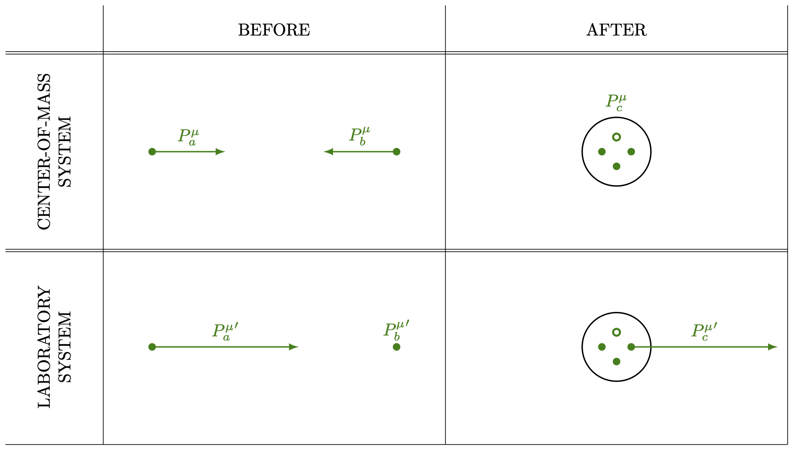
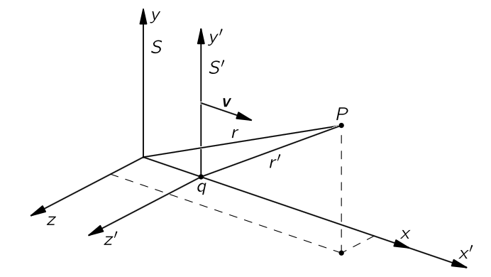
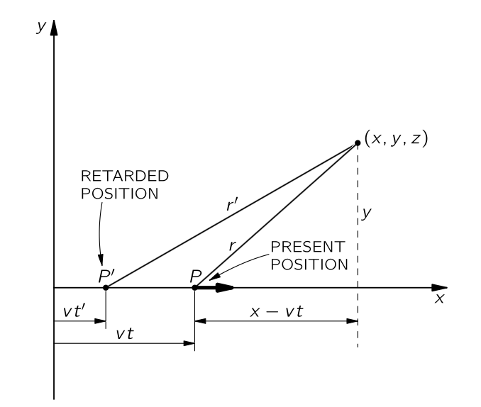
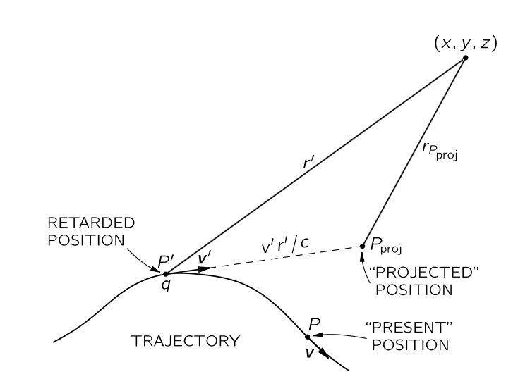
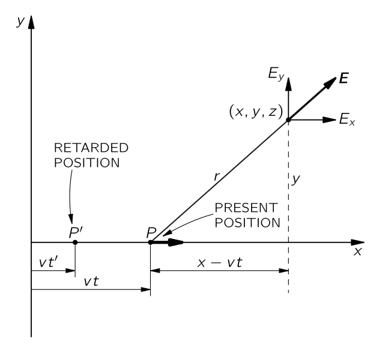
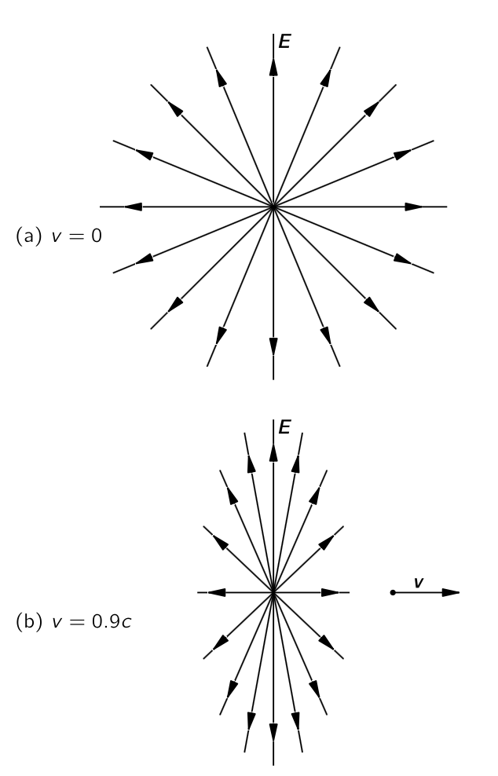
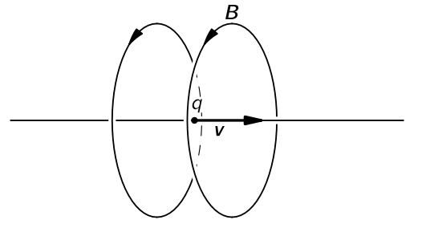
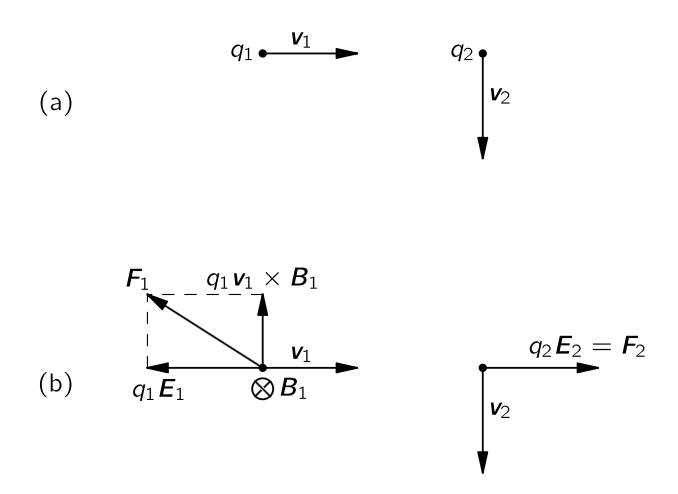

% %
%
\[ \DeclarePairedDelimiters{\set}{\{}{\}} \DeclareMathOperator*{\argmax}{argmax} \]
\(\textrm{II}\).25 전기동역학의 상대론적 표기법
\(\textrm{II}\).25-1 4-벡터
이제 특수 상대성 이론을 전기역학에 적용하는 것에 대해 알아보자. 우리는 앞서 특수 상대성 이론을 알아보았으므로 기본 아이디어를 간단히 짚고 넘어가겠다..
실험적으로 우리가 균일한 속도로 움직인다면 물리학 법칙은 변하지 않는 것으로 밝혀졌다. 우주선 밖을 바라보거나 최소한 외부 세계와 관련된 관찰을 하지 않는 한, 직선으로 일정한 속도로 이동하는 우주선 안에 있는지 알 수 없다. 우리가 기록하는 모든 진정한 물리학 법칙은 자연의 이 사실이 내재하도록 배치되어야 한다다.
두 좌표계 \(S,\,S'\) 에서 \(S'\) 이 \(S\) 에 대해 균일한 속도 \(v\boldsymbol{e}_x\) 로 움직이는 경우의 공간과 시간 사이의 관계는 로렌츠 변환으로 주어진다.
\[ t' = \dfrac{t - vx}{\sqrt{1-v^2}},\qquad x' = \dfrac{x-t}{\sqrt{1-v^2}},\qquad y'=y,\qquad z'=z. \tag{14.1}\]
로렌츠 변환 후에 물리법칙의 새로운 형태의는 옛 형태와 똑아야 한다. 이는 물리 법칙이 좌표계의 방향에 의존하지 않는다는 원리와 같다. \(\mathrm{I}\).11 벡터 에서 우리는 회전에 관한 물리학의 불변성을 수학적으로 설명하는 방법이 방정식을 벡터로 표현하는 것임을 보였다.
예를 들어, 두 개의 벡터 \(\boldsymbol{A}=(A_x,A_y,A_z)\) 와 \(\boldsymbol{B}=(B_x,B_y,B_z)\) 에 대해
\[ \boldsymbol{A\cdot B} = A_xB_x + A_yB_y + A_zB_z \]
를 회전 좌표계로 변환했을 경우 변하지 않았다. 따라서 방정식의 양변에 \(\boldsymbol{A\cdot B}\) 와 같은 스칼라 곱이 있으면, 그 방정식은 모든 회전 좌표계에서 정확히 동일한 형태를 갖게 된다. 우리는 또한 연산자 \(\nabla\) 를 스칼라 함수에 적용했을 때, 벡터와 같이 변환되는 세 개의 양을 얻는다는 것을 알게 되었다. 이 연산자를 사용하여 우리는 기울기를 정의했으며, 다른 벡터와 결합하여 발산과 라플라시안을 정의했다. 마침내 우리는 두 벡터의 구성 요소 쌍의 특정 곱들의 합을 취함으로써 새로운 벡터와 유사하게 동작하는 세 개의 새로운 양을 얻을 수 있음을 발견했습니다. 우리는 그것을 두 벡터의 벡터곱(cross product) 이라고 부른다. \(\nabla\) 연산자와 벡터곱을 사용하여 우리는 벡터의 컬을 정의했다.
특수 상대성 이론의 경우 시간과 공간은 불가분하게 뒤섞여 있으며, 우리는 4차원에 대해 유사한 일을 해야 한다. 우리는 회전뿐만 아니라 모든 관성 기준틀에 대해서도 방정식이 동일하게 유지되기를 원한다. 즉, 우리의 방정식은 로렌츠 변환(식 14.1) 하에서 불변이어야 한다. 이 장의 목적은 그것을 어떻게 할 수 있는지 보이는 것이다. 하지만 시작하기 전에, 우리는 작업을 훨씬 더 쉽게 하면서 혼란을 줄일 수 있는 무언가를 하려 한다. 그리고 그것은 빛의 속도 \(c\) 가 \(1\) 과 같도록 길이와 시간의 단위를 선택하는 것이다. 시간 단위를 빛이 1미터를 이동하는 데 걸리는 시간(약 3×10−9 초)이라고 생각하면 된다. 우리는 이 시간 단위를 “1미터”라고 부를 수도 있다. 이 단위를 사용하면, 우리의 모든 방정식이 시공간 대칭을 보다 명확하게 보여줄 것이다. 또한, 모든 \(c\) 는 우리의 상대론적 방정식에서 사라질 것이다. (만약 이것이 불편하시다면, 모든 t를 ct로 교체하거나, 일반적으로 필요한 곳마다 \(c\) 를 붙여 넣어 방정식의 차원을 정확히 만들 수 있다.) 이 기초 작업을 통해 우리는 시작할 준비가 되었다. 우리 프로그램은 시공간의 4차원에서 3차원을 위한 벡터를 사용한 모든 작업을 수행하는 것이다. 정말 꽤 간단한 게임이며, 우리는 단지 유추에 따라 작업한다. 유일한 실제 복잡성은 표기법(우리는 이미 3차원에 대해 벡터 기호를 다 사용했습니다)과 약간의 기호 변형이다.
먼저, 3차원 벡터와 유사하게, 우리는 4벡터를 4개의 양으로 구성된 집합으로 정의하고 \((X^0,\,X^1,\,X^2,\,X^3)\) 와 같이 표기하는데, 이동하는 좌표계에서 \(t, x, y, z\) 와 같이 변환된다. 네 개 벡터에 대해 사람들이 사용하는 여러 가지 표기법이 있다. \(X^\mu\) 라고 쓰면 \((X^0,\,X^1,\,X^2,\,X^3)\) 를 의미한다. 즉, \(\mu\) 는 \(0,\,1,\,2,\,3\) 의 네 가지 값을 취할 수 있다. 때때로 세 개의 공간 성분을 다음과 같이 삼중 벡터로 표시하는 것이 편리할 수 있다: \(X^\mu=(X^0,\boldsymbol{X})\).
우리는 이미 \(\mathrm{I}\).17 시공간 에서 입자의 에너지와 운동량으로 구성된 4벡터를 하나 접했다. 새로운 표기법으로는 다음과 같다.
\[ P^\mu = (E,\,\boldsymbol{p}). \tag{14.2}\]
이것은 물리학에서 각 3벡터마다 남은 구성 요소가 무엇이어야 하는지를 찾기만 하면 4벡터가 되는 정말 매우 간단한 게임처럼 보인다. 하지만 이것이 사실이 아님을 보이는데는 속도 벡터 \(\boldsymbol{v}\) 를 생각해 보면 된다. 그렇다면 속도벡터에 대한 시간 성분은 무엇인가 이다? 네 개의 벡터가 \(t,\, x,\, y,\, z\) 와 같으므로, 우리는 시간 성분이
\[ V^0=\dfrac{dt}{dt}=1 \]
이라고 결론을 내릴 수도 있다. 하지만 이것은 잘못되었다. 그 이유는 로렌츠 변환을 할 때 각 분모의 \(t\) 가 불변이 아니기 때문이다. 분자들은 네 벡터를 만들기에 올바른 동작을 가지고 있지만, 분모의 \(dt\) 는 상황을 망친다. 이는 비대칭이며 두 개의 서로 다른 시스템에서 동일하지 않다.
결과적으로, 우리가 적어 놓은 네 개의 “속도” 구성 요소는 \(\sqrt{1−v^2}\) 로 나누면 네 벡터의 구성 요소가 된다. 우리는 그것이 사실임을 알 수 있다, 왜냐하면 모멘텀 4벡터부터 시작하면
\[ P^\mu = (E,\boldsymbol{p}) = \left(\dfrac{m}{\sqrt{1−v^2}},\,\dfrac{m \boldsymbol{v}}{\sqrt{1-v^2}}\right), \tag{14.3}\]
이것을 질량 \(m\) 으로 나누면, 이는 4차원에서 불변 스칼라이며,
\[ \dfrac{P^\mu}{m}=\left(\dfrac{1}{\sqrt{1−v^2}},\,\dfrac{ \boldsymbol{v}}{\sqrt{1-v^2}}\right) \tag{14.4}\]
이것은 여전히 4벡터여야 한다. (불변 스칼라로 나누어도 변환 속성은 변하지 않는다.) 따라서 우리는 속소 4-벡터를 다음과 같이 정의할 수 있다.
\[ U^\mu = \left(\dfrac{1}{\sqrt{1−v^2}},\,\dfrac{ v_x}{\sqrt{1-v^2}},\,\dfrac{ v_y}{\sqrt{1-v^2}},\,\dfrac{ v_z}{\sqrt{1-v^2}}\right) \]
4속도는 유용한 양이다.: 예를 들어 우리는 다음과 같이 쓸 수 있다.
\[ P^\mu = mU^\mu. \tag{14.5}\]
이는 상대론적으로 올바른 방정식이 가져야 할 전형적인 형태다. 각 변은 4-벡터이다. 오른쪽은 불변량에 4벡터를 곱한 것으로, 여전히 4벡터이다.
\(\mathrm{II}\).25–2 스칼라곱
좌표 회전 하에서 점이 원점으로부터의 거리가 변하지 않는 것은 인생의 우연이다. 이는 수학적으로 \(r^2=x^2+y^2+z^2\) 가 불변량임을 의미한다. 다시 말해, 회전 이후 \(r'^2=r^2\) 이다. 이제 질문은 다음과 같다: 로런츠 변환 하에서 불변인 유사한 양이 존재하는가? 물론이다. 식 14.1 로부터 볼 수 있다
\[ t'^2−x'^2=t^2−x^2. \]
이것은 꽤 괜찮지만 \(x\)-방향의 선택에 따라 달라진다. 우리는 \(y^2\) 와 \(z^2\) 를 빼면 이를 해결할 수 있다. 로런츠 변환에 회전을 더하면 양은 변하지 않는다. 따라서 4차원에서 3차원에 대해 \(r^2\) 와 유사한 양은
\[ t^2−x^2−y^2−z^2. \]
이는 완전 로런츠 군 (complete Lorentz group) 이라고 불리는 불변량이며, 이는 일정한 속도와 회전에서 두 평행 이동을 변환하는 것을 의미한다.
이제 이 불변성은 방정식의 변환 규칙 식 14.1 과 회전에만 의존하는 대수적 문제이므로 이는 모든 사변수 \(X^\mu\) 에 대해 참이다(정의상 모두 동일하게 변환된다.)
이제 두 벡터 \(A^\mu\) 와 \(B^\mu\) 에 대해
\[ A_\mu B^\mu = A^\mu B_\mu = A^0B^0-A^1B^1 - A^2B^2 - A^3B^3 \tag{14.7}\]
역시 불변(스칼라) 양이다. 로렌츠 변환 하에서 스칼라 곱의 불변성은 다음과 같이 표현될 수 있다.
\[ A'_\mu B'^\mu = A_\mu B^\mu. \]
식 14.7 의 마지막 세 항은 3차원에서의 스칼라곱이므로, \(A^\mu = (A^0,\,\boldsymbol{a})\), \(B^\mu = (B^0,\,\boldsymbol{b})\) 일 때 종종 이렇게 쓰기도 한다.
\[ A_\mu B^\mu = A^0B^0 − \boldsymbol{a \cdot b}. \]
예제 14.1 (반양성자 생성) 반양성자 \(\overline{p}\) 는 거대 가속기에서 다음 반응으로 생성된다.
\[ p+p \to p + p + p + \overline{p}. \]
즉, 높은 에너지의 양성자(\(p\)) 가 정지 중인 양성자와 충돌하할 때, 입사 양성자에 충분한 에너지가 있다면 원래의 두 양성자 외에 양성자‐반양성자 쌍이 생성될 수 있다. 질문은 다음과 같다: 이 반응이 가능하려면 입사 양성자의 에너지는 어느정도여야 하는가?

답을 얻는 가장 쉬운 방법은 질량 중심(CM) 좌표계에서 보는 것이다(그림 14.1 을 참고하라). 우리는 입사 양성자 \(a\) 의 4-운동량을 \(P^\mu_a\) 라고 하자. 마찬가지로 표적 양성자 \(b\) 의 4-운동량을 \(P^\mu_b\) 라고한다. 만약 입사 양성자가 반응을 일으키기에 아슬아슬하게 충분한 에너지를 가지고 있다면, 충돌 후의 최종 상태는 CM 좌표계에서 정지된 세 개의 양성자 반양성자로 구성된 한덩어리이다. 입사 에너지가 약간 더 높다면, 최종 상태 입자들은 약간의 운동 에너지를 가지고 서로 떨어지게 된다. 입사 에너지가 약간 낮다면 네 입자를 만들 충분한 에너지가 없을 것이다.
최종 상태에서 전체 구의 총 4-운동량을 \(P^\mu_c\) 라고 하면, 에너지와 운동량의 보존으로부터 \(\boldsymbol{p}_a+\boldsymbol{p}_b=\boldsymbol{p}_c\) 와 \(E_a+E_b=E_c\) 를 얻는다. 이 두 방정식을 결합하면,
\[ P^\mu_a + P^\mu_b = P^\mu_c. \tag{14.8}\]
릉 얻는다. 이제 중요한 점은 이것이 4-벡터 사이의 방정식이며, 따라서 모든 관성 좌표계에서 성립한다는 이 사실을 사용하여 계산을 단순화할 수 있다. 식 14.8 의 양쪽의 의 길이가 동일하다는 것부터 시작한다.
\[ |P_a^\mu + P_b^\mu|^2 = |P_c^\mu|^2. \tag{14.9}\]
\(|P_c^\mu|\) 는 불변이므로, 어떤 좌표계에서도 이를 평가할 수 있다. CM 시스템에서, \(P_c^\mu\) 의 시간 성분은 네 개의 양성자의 정지 에너지이며 이를 \(4M\) 이라고 하자. \(P_c^\mu\) 공간 부분은 0 이므로 \(P_c^\mu = (4M, \boldsymbol{0})\) 이다. 우리는 반양성자의 정지질량이 양성자의 정지질량과 같다는 사실을 사용했으며, 이 공통 질량을 \(M\) 이라고 했다. 따라서 식 14.9 은
\[ P_a^\mu P_a^\mu + 2P_a^\mu P_b^\mu + P_b^\mu P_b^\mu =16M^2. \tag{14.10}\]
여기서 질량 \(m\) 인 입자에 대해
\[ P^\mu P^\mu = E^2−\|\boldsymbol{p}\|^2 = m^2. \]
이다. 이것은 직접 계산으로 보일 수도 있지만 정지된 입자에 대해 \(P^\mu=(m,0)\) 으로부터 \(|P^\mu|^2=m^2\) 으로 보일 수도 있다. 이것은 불변량이므로 모든 기준틀에서 \(m^2\) 와 같다. 이 결과를 식 14.10 에 사용하면
\[ P_a^\mu P_b^\mu =7M^2. \tag{14.11}\]
이제 우리는 실험실 기준틀에서 \(P_a^\mu P_b^\mu = {P_a^\mu}' {P_b^\mu}'\) 를 평가할 수 있다. \({P_a^\mu}'= (E_a',\,\boldsymbol{p}_a′)\) 이며 실험실 기준틀에서 \(b\) 는 정지된 양성자이므로 \({P_b^\mu}'=(M,\,0)\) 이다. 따라서 \({P_a^\mu}' {P_b^\mu}' = ME_a′\) 와 이며 스칼라 곱이 불변이므로 이는 식 14.11 와 동일해야 합니다. 이로부터
\[ E_a'= 7M. \]
이것은 우리가 물었던 결과입니다. 초기 양성자의 총 에너지는 최소 \(7M\)(약 \(6.6\,\text{GeV}\), \(M=938\,\text{MeV})\) 이어야 하며, 나머지 질량 \(M\) 을 제외하면 운동 에너지는 최소 \(6M\)(약 \(5.6\,\text{GeV}\))이어야 한다. 버클리의 베바트론 가속기는 가속하는 양성자에게 약 \(6.2\,\text{GeV}\) 의 운동 에너지를 부여하도록 설계되었으며, 이를 통해 반양성자를 만들 수 있게 되었다.
스칼라 곱은 불변이기 때문에 평가하기에 항상 흥미롭다. 4-속도의 제곱길이 \(U^\mu U^\mu\) 는
\[ U^\mu U^\mu =\dfrac{1}{1-v^2} - \dfrac{v^2}{1-v^2} = 1. \]
따라서 \(U^\mu\) 는 단위 4-벡터 이다.
\(\mathrm{II}\).25–3 4차원 그래디언트
4-그래디언트
다음에 논의해야 할 사항은 그라디언트의 4차원 유사체이다. 3차원 공간에서의 그래디언트를 생각하면 4차원 그래디언트가 \((\partial/\partial t,\partial / \partial x,\partial /\partial y, \partial /\partial z)\) 이어야 한다고 추정할 수 있지만 이것은 잘못되었다. 오류를 확인해보자. \(x\) 와 \(t\) 에만 의존하는 스칼라 함수 \(\phi\) 를 생각하자. \(x\) 를 일정하게 유지하면서 \(t\) 에 작은 변화 \(\Delta t\) 를 가할 경우,
\[ \Delta \phi = \dfrac{\partial \phi}{\partial t}\Delta t. \tag{14.12}\]
반면에, 움직이는 관찰자에 대해서는
\[ \Delta \phi = \dfrac{\partial \phi}{\partial x'}\Delta x' + \dfrac{\partial \phi}{\partial t'}\Delta t' \]
우리는 식 14.1 을 사용하여 \(\Delta x'\) 와 \(\Delta t'\) 를 \(\Delta t\) 로 표현할 수 있다. 여기서 \(x\) 를 일정하게 유지하고 있으므로 \(\Delta x=0\) 이다. 따라서
\[ \Delta x' = - \dfrac{v}{\sqrt{1-v^2}} \Delta t;\qquad \Delta t' = \dfrac{\Delta t}{\sqrt{1-v^2}} \]
이므로
\[ \Delta \phi = \dfrac{\partial \phi}{\partial x'}\left(- \dfrac{v}{\sqrt{1-v^2}} \Delta t \right) + \dfrac{\partial \phi}{\partial t'} \left(\dfrac{\Delta t}{\sqrt{1-v^2}} \right) \]
이 결과를 식 14.12 과 비교하면
\[ \dfrac{\partial \phi}{\partial t} = \dfrac{1}{\sqrt{1−v^2}}\left( \dfrac{\partial \phi}{\partial t'} − v \dfrac{\partial \phi}{\partial x'}\right). \tag{14.13}\]
지금까지와 비슷하게 계산하면 다음을 얻는다.
\[ \dfrac{\partial \phi}{\partial x}=\dfrac{1}{\sqrt{1−v^2}} \left( \dfrac{\partial \phi}{\partial x'}− v \dfrac{\partial \phi}{\partial t'}\right). \tag{14.14}\]
이 그래디언트가 다소 이상하지 않은가? 식 14.1 으로부터의 \(x\) 와 \(t\) 에 대한 \(x'\) 와 \(t'\) 에 대한 공식은
\[ t=\dfrac{t'+vx'}{\sqrt{1−v^2}}, \qquad x = \dfrac{x'+vt'}{\sqrt{1−v^2}} \]
으로 이것은 4-벡터가 변환되는 방식이다. 하지만 식 14.13 와 식 14.14 는 몇 개의 부호가 잘못되었다!
해법은 잘못된 \((\partial /\partial t,\nabla)\) 대신, \(\nabla_μ\) 라고 부를 4차원 그래디언트 연산자를 정의해야 한다는 것이다.
이 정의에 따라 위에서 겪은 부호 문제는 사라지며, \(\nabla_\mu\) 는 4-벡터가 그래야 하는 대로 동작합니다. (그런 마이너스 기호가 있는 것이 다소 어색하지만, 세상은 원래 그렇다.) 물론, \(\nabla_\mu\) 가 4-벡터처럼 행동한다는 의미는 단순히 스칼라의 네 가지 그라디언트가 4-벡터라는 뜻이다. \(\phi\) 가 스칼라 불변장(scalar invariant fields) 이라면\(^1\) \(\nabla_\mu \phi\) 는 4-벡터 이다.
4-발산
자, 이제 벡터와 그래디언트, 그리고 스칼라곱이 생겼다면, 다음으로는 3차원 벡터 해석학의 발산과 유사한 불변량을 찾아야 한다. 분명히, 4-벡터장 \(B^\mu\) 에 대해 \(∇_μB^\mu\) 와 같은 표현이 되어야 한다.
부호를 잘 살펴야 한다. 스칼라곱의 정의(식 14.7) 와 \(\nabla_\mu\) 의 정의(식 14.15) 로부터 식 14.16 이 나온다. 식 14.16 에 의해 정의된 발산은 불변이며, 로렌츠 변환에 의해 차이가 나는 모든 좌표계에서 동일한 답을 제시한다.
4-발산이 나타나는 물리적 예를 알아보자. 움직이는 전선 주변의 필드 문제를 해결할 수 있다. 우리는 이미 \(\mathrm{II}\).13-7 전류와 전하의 변화 에서 전하 밀도 \(\rho\) 와 전류 밀도 \(\boldsymbol{J}\) 가 4-벡터 \(J^\mu=(\rho,\,\boldsymbol{J})\) 를 형성한다는 것을 보았다. 만약 전하가 없는 전선이 전류 \(J_x\) 를 전달한다면, 속도 \(v\boldsymbol{e}_x\) 로 그 위를 지나가는 기준틀에서, 그 전선은 로렌츠 변환 식 14.1 에서 얻은 전하와 전류 밀도를 갖게 된다.
\[ \rho′ = \dfrac{−vJ_x}{\sqrt{1−v^2}},\qquad J′_x=\dfrac{J_x}{\sqrt{1−v^2}}. \]
이것은 우리가 \(\mathrm{II}\).13-7 전류와 전하의 변화 에서 발견한 바로 그 내용이다. 그런 다음 우리는 움직이는 기준틀에서 맥스웰 방정식의 이러한 소스들을 사용하여 장을 찾을 수 있다.
\(\mathrm{II}\).13-2 전류와 전하 보존 에서의 전하 보존 법칙 또한 4-벡터 표기법으로 간단한 형태를 취한다. \(J^\mu\) 의 4-발산은
\[ \nabla_\mu J^\mu =\dfrac{\partial \rho}{\partial t} + \nabla \boldsymbol{\cdot J}. \tag{14.17}\]
전하 보존 법칙에 따르면, 단위 부피당 전류의 유출량은 전하 밀도 증가의 음수와 같아야 한다. 즉
\[ \nabla \boldsymbol{\cdot J}=-\dfrac{\partial \rho}{\partial t}. \]
이며 이를 식 14.17 에 대입하면
\[ \nabla_\mu J^\mu=0. \tag{14.18}\]
\(\nabla_\mu J^\mu\) 는 불변 스칼라이므로, 한 기준틀에서 0이면 모든 기준틀에서도 0이 된다. 즉 전하가 하나의 기준틀에서 보존된다면, 균일한 속도로 움직이는 모든 기준틀에서도 보존된다는 결과를 얻게 된다.
달랑베르 연산자
마지막으로 기울기 연산자 ∇μ의 스칼라 곱에 대한 발산, 즉 3차원에서의 라플라시안 연산자에 대한 4차원 유사체를 알아보자. 4-벡터 스칼라곱 및 4-그라디언트에 대한 규칙을 따르는 4차원 유사체를 달랑베르 연산자 (d’Alembertian) 라고 한다.
이 정의에 따르면 달랑베르 연산자는 불변 스칼라 연산자이며, 4-벡터장에 대해 하면 새로운 4-벡터장을 생성한다.
\(\mathrm{II}\).25–4 4차원 표기법을 사용한 전기동역학
우리는 이미 \(\mathrm{II}\).18‐6 멕스웰 방정식의 해 에서 달랑베르 연산자를 접해 본 적이 있다. 포텐셜에 대한 미분방정식은 달랑베르 연산자를 통해 다음과 같이 쓸 수 있다.
\[ \square^2\Phi = \dfrac{\rho}{\epsilon_0},,\qquad \square^2\boldsymbol{A} = \dfrac{\boldsymbol{J}}{\epsilon_0}. \tag{14.19}\]
식 14.19 에 있는 두 방정식의 오른쪽 변에 있는 네 개의 양은 \(\rho,\,J_x,\,J_y,\,J_z\) 를 \(\epsilon_0\) 로 나눈 값이며, \(\epsilon_0\) 는 모든 기준틀에서 동일한 보편적인 상수이다. 따라서 네 개의 양 \(\rho/\epsilon_0\), \(J_x/\epsilon_0\), \(J_y/\epsilon_0\), \(J_z/\epsilon_0\) 도 4-벡터로 변환된다. 우리는 그것들을 \(J^\mu/\epsilon_0\) 로 쓸 수 있다. 달랑베르 연산자는 좌표계가 바뀔 때 변하지 않으므로, \(\Phi, A_x, A_y, A_z\) 양도 네 벡터와 같이 변환되어야 하며, 이는 그들이 4-벡터의 구성 요소임을 의미한다.
\(A^\mu\) 역시 4-벡터이다. 우리가 스칼라 퍼텐셜과 벡터 퍼텐셜이라고 부르는 것은 실제로 같은 물리적 사물의 서로 다른 측면이다. 그들은 함께 어울린다. 그리고 그것들이 함께 유지된다면 세계의 상대론적 불변성은 명백하다.
4-벡터 표기법 으로 식 14.19 은 간단히 다음과 같이 표현된다.
\[ \square^2 A^\mu = \dfrac{J^\mu}{\epsilon_0}. \tag{14.20}\]
이 방정식의 물리학은 맥스웰 방정식과 동일하다. 하지만 그것들을 우아한 형태로 다시 쓸 수 있다는 것에 약간의 즐거움이 있다. 보기 좋은 형태도 의미가 있다. 이는 로렌츠 변환 하에서 전기역학의 불변성을 직접적으로 보여준다. 식 14.19 은 아래의 게이지 조건을 적용한 경우에만 맥스웰 방정식으로부터 유도될 수 있다는 것을 기억하라.
\[ \dfrac{\partial \Phi}{\partial t} + ∇\boldsymbol{\cdot A}=0 \tag{14.21}\]
이 식은 \(\nabla_\mu A^\mu = 0\) 임을 말하며 이 조건을 로렌츠 조건 (Lorenz condition) 이라고 한다. 불변 조건이기 때문에 매우 편리하며, 따라서 맥스웰 방정식은 모든 기준틀에 대해 식 14.20 식의 형태를 유지한다.
\(\mathrm{II}\).25-5 움직이는 전하의 4-포텐셜
앞서 설명한 것에 암시되어 있지만, 움직이는 기준틀 \(S'\) 에서의 4-포텐셜 \(A'^\mu\) 를 고정 기준틀 \(S\) 에서의 4-포텐셜 \(A^\mu\) 로 변환하는 변환 법칙을 알아 보자. \(A^\mu=(\Phi,\,\boldsymbol{A})\) 는 4-벡터이므로, 식 14.1 과 똑같은 형태여야 한다. \(S'\) 이 \(S\) 에서 측정된 바와 같이 양의 \(x\) 방향에서 속도 \(v\) 로 움직이고 있다고 가정한다.
\[ \Phi' = \dfrac{\Phi-vA_x}{\sqrt{1-v^2}},\qquad A'_x = \dfrac{A_x-v\Phi}{\sqrt{1-v^2}},\qquad A'_y = A_y,\qquad A'_z = A_z. \tag{14.22}\]

4-포텐셜이라는 개념의 유용성에 대한 한 예를 들어보자. \(v\boldsymbol{e}_x\) 로 이동하는 전하 \(q\) 에 대한 벡터와 스칼라 퍼텐셜은 무엇일까? 전하와 함께 움직이는 좌표계에서는 전하가 정지해 있기 때문에 문제는 쉽다. 전하가 그림 14.2 와 같이 \(S'\) 기준틀의 원점에 있다고 하자. 그 후 움직이는 기준틀에서의 스칼라 퍼텐셜은
\[ \Phi′ =\dfrac{q}{4\pi \epsilon_0 r'} \tag{14.23}\]
이다. 여기서 \(r'\) 은 움직이는 기준틀에서 측정된 \(q\) 로부터의 거리이다. 벡터 퍼텐셜 \(\boldsymbol{A}'\) 는 물론 \(\boldsymbol{0}\) 이다. 이제 정지 기준틀에서의 포텐셜 \(\Phi\) 와 \(\boldsymbol{A}\) 는 쉽게 구할 수 있다. 식 14.13 에 대한 역관계는
\[ \Phi = \dfrac{\Phi' + vA'_x}{\sqrt{1-v^2}},\qquad A_x = \dfrac{A'_x + v\Phi'}{\sqrt{1-v^2}},\qquad A_y = A'_y,\qquad A_z = A'_z. \tag{14.24}\]
식 14.23 의 \(\Phi'\) 과 \(\boldsymbol{A}'=\boldsymbol{0}\) 을 이용하면
\[ \Phi = \dfrac{q}{4\pi \epsilon_0} \dfrac{1}{r'\sqrt{1−v^2}} = \dfrac{q}{4\pi \epsilon_0} \dfrac{1}{\sqrt{1−v^2}\sqrt{x'^2+y'^2+z'^2}} \]
이다. 이것은 \(S\) 에서의 스칼라 포텐셜이지만, 아직 \(S'\) 의 좌표로 표현되어 있다. 식 14.1 을 통해 \(t,\,x,\,y,\,z\) 를 구하면
\[ \Phi = \dfrac{q}{4\pi \epsilon_0} \dfrac{1}{\sqrt{1-v^2}} \dfrac{1}{\sqrt{[(x-vt)/\sqrt{1-v^2}]^2 + y^2+z^2}}. \tag{14.25}\]
위와 동일한 과정으로 \(\boldsymbol{A}\) 를 구하면
\[ \boldsymbol{A}=\boldsymbol{v}\Phi . \tag{14.26}\]
\(\mathrm{II}\).21 전하와 전류가 있을 때의 멕스웰 방정식의 해 에서 다른 방법으로 유도한 동일한 공식들이다.
\(\mathrm{II}\).25–6 전기동역학 방정식의 불변성
\(\Phi\) 와 \(\boldsymbol{A}\) 를 합쳐 4-벡터 \(A^\mu\) 를 형성한다는 것을 발견했으며, 파동 방정식—\(A^\mu\) 를 \(J^\mu\) 로부터 결정하는 전체 방정식—은 식 14.20 와 같이 표현될 수 있다. 이 방정식은 전하 보존식 식 14.18 와 함께 전자기장의 기본 법칙을 보여준다.:
\[ \square^2 A^\mu =\dfrac{J_\mu}{\epsilon_0},\qquad \nabla_\mu J^\mu = 0. \tag{14.27}\]
아름다우면서도 단순한 방정식이다. 하지만 우리가 지금까지 배워온 것의 정리일 뿐 새로운 것이 잇는 것은 아니다. 단지 새로운 표기법일 뿐. 그렇다면 방정식을 이 간단한 형태로 쓸 수 있다는 사실의 의미는 무엇인가? 아마도, 방정식의 단순함은 자연도 일정한 단순성을 가지고 있음을 의미할 것이다.
최근에 발견한 흥미로운 것을 보이겠다. 모든 물리 법칙은 하나의 방정식에 포함될 수 있다. 그 방정식은
\[ \mathsf{U}=0. \tag{14.28}\]
정말 간단한 방정식이다! 당연히 기호가 의미하는 바를 알아야 한다. \(\mathsf{U}\) 는 상황의 “비현실성”이라고 부를 만한 물리적 양이다. 그리고 우리는 그것에 대한 공식이 있습니다. 다음은 비현실성을 계산하는 방법이다. 당신은 알려진 모든 물리 법칙을 취하여 특별한 형태로 작성합니다. 예를 들어, 역학 법칙 \(\boldsymbol{F}=m\boldsymbol{a}\) 에 대해 \(\boldsymbol{F}−m\boldsymbol{a}=\boldsymbol{0}\) 으로 다시 작성한다고 하자. 그렇다면 \((\boldsymbol{F}−m\boldsymbol{a})\)—물론 0이어야 함—을 역학의 “비현실성” 이라고 부를 수 있다. 다음으로, 이 불일치의 제곱을 \(\mathsf{U}_1\) 이라고 부르며, 이는 “역학적 효과의 비현실성” 이라고 부를 수 있다. 다시 말하면,
\[ \mathsf{U}_1=(\boldsymbol{F}−m\boldsymbol{a})^2. \tag{14.29}\]
이제 \(\nabla \boldsymbol{\cdot E} = \rho/\epsilon_0\) 와 같이 또 다른 물리 법칙에 대해
\[ \mathsf{U}_2=\left(\nabla \boldsymbol{\cdot E} − \dfrac{\rho}{\epsilon_0}\right)^2 \]
라고 하면 이것을 “전기의 가우시안적 비현실성” 이라고 부를 수 있다. 우리는 계속해서 각 법칙마다 \(\mathsf{U}_3,\,\mathsf{U}_4, \ldots\) 로 이어갈 수 있다. 최종적으로 세계의 전체 비현실성 \(\mathsf{U}\) 를 관련된 모든 하위 현상에 대한 다양한 비현실성 \(\mathsf{U}_i\) 의 합이라고 하자. 즉, \(\mathsf{U} = \sum \mathsf{U}_i\). 그렇다면 위대한 “자연의 법칙”은
\[ \mathsf{U}=0. \tag{14.30}\]
이 “법칙”은 물론 모든 개별 불일치들의 제곱합이 0임을 의미하며, 많은 제곱의 합이 0이 될 수 있는 유일한 방법은 각 항이 0이 되는 것 뿐이다. 따라서 식 14.30 의 “아름다우면서도 단순한” 법칙은 우리가 원래 적어 놓은 전체 방정식 시리즈와 동일하다. 따라서 기호의 정의에 복잡성을 숨기는 단순한 표기법은 진정한 단순함이 아니라는 것이 절대적으로 명백하다. 그것은 단지 속임수일 뿐이다. 식 14.30 에 나타나는 아름다움은 그 안에 여러 방정식이 숨겨져 있다는 사실만으로도 그저 속임수에 불과하다. 전체를 풀어내면, 이전에 있던 곳으로 돌아가게 된다.
그러나 전기자기 법칙이 식 14.27 의 형태로 작성된 단순함에는 더 많은 것이 있다. 그것은 더 많은 것을 의미한다, 마치 벡터 해석학이 더 많은 것을 의미하는 것처럼. 전자기 방정식이 로렌츠 변환의 4차원 기하학을 위해 설계된 매우 특수한 표기법, 즉 사공간의 벡터 방정식으로 표현될 수 있다는 사실은 로렌츠 변환 하에서 불변임을 의미한다. 맥스웰 방정식이 그 변환들 아래에서 불변이기 때문에 아름다운 형태로 표현될 수 있다.
전기역학의 방정식을 식 14.27 와 같이 아름답게 우아한 형태로 작성할 수 있다는 것은 우연이 아니다. 상대성 이론은 맥스웰 방정식이 예측한 현상이 모든 관성계에서 동일하다는 것이 실험적으로 밝혀진 결과로 개발되었다. 그리고 바로 맥스웰 방정식의 변환 성질을 연구함으로써 로렌츠는 이 변환이 방정식을 불변하게 만드는 변환임을 발견했다.
하지만, 우리 방정식을 이렇게 쓰는 또 다른 이유가 있다. 아인슈타인이 그럴 수도 있다고 추측한 뒤, 모든 물리 법칙이 로렌츠 변환에 따라 불변한다는 것이 발견되었다. 그것이 상대성 원리이다. 따라서, 법칙이 기록될 때 그것이 불변인지 아닌지를 즉시 표시하는 표기법을 고안한다면, 새로운 이론을 만들려고 할 때 상대성 원리와 일치하는 방정식만을 작성하게 될 것임을 확신할 수 있다.
맥스웰 방정식이 이 특정 표기법에서 단순하다는 사실은 기적이 아니며, 그 표기법은 멕스웰 방정식을 염두에 두고 고안되었다. 하지만 흥미로운 물리적인 점은 모든 물리 법칙—메존 파동의 전파나 베타 붕괴에서의 중성미자 거동 등—이 동일한 변환 하에서 동일한 불변성을 가져야 한다는 것이다. 그렇다면 우주선 안에서 균일한 속도로 움직일 때, 자연의 모든 법칙이 함께 변환되어 새로운 현상이 나타나지 않는다. 상대성 원리가 자연의 사실이기 때문에 4차원 벡터의 표기법에서는 세계의 방정식이 단순하게 보인다.
\(\textrm{II}\).26 장의 로런츠 변환
\(\mathrm{II}\).26-1 움직이는 전하의 4-포텐셜

우리는 지난 장에서 포텐셜 \(A^\mu=(\Phi,\,\boldsymbol{A})\) 가 4-벡터임을 확인했다. 우리는 또한 로렌츠 변환을 이용하여 직선상에서 일정한 속도로 이동하는 입자의 퍼텐셜을 계산했다. (물론 앞서 \(\mathrm{II}\).21 전하와 전류가 있을 때의 멕스웰 방정식의 해 에서 다른 방법으로 찾았다.) 시간 \(t\) 에서 위치가 \((vt,0,0)\) 인 점 전하에 대해, \((x,y,z)\) 지점의 포텐셜은
\[ \begin{aligned} \Phi &= \dfrac{1}{4\pi\epsilon_0 \sqrt{1-v^2}} \dfrac{q}{\left[\dfrac{(x-vt)^2}{1-v^2} + y^2 + z^2\right]^{1/2}}, \\[0.3em] A_x &= \dfrac{1}{4\pi\epsilon_0 \sqrt{1-v^2}} \dfrac{qv}{\left[\dfrac{(x-vt)^2}{1-v^2} + y^2 + z^2\right]^{1/2}}, \\[0.3em] A_y &= A_z = 0. \end{aligned} \tag{14.31}\]
식 14.31 은 시간 \(t\) 에서 \(x, y, z\) 에서 전위를 제공하며, 그 전하의 “현재” 위치(즉, 시간 \(t\) 의 위치)는 \(x=vt\) 이다. 방정식은 \((x−vt), y, z\) 에서이며, 이는 이동 전하의 현재 위치 \(P\) 에서 측정된 좌표임을 기억하라(그림 14.3). 우리가 실제로 알고 있는 영향은 속도 \(c\) 로 전달되므로, 지연된 위치 \(P'\) 에서의 전하 반환 거동이 진정으로 중요하다\(^2\). 점 \(P'\) 는 \(x=vt'\) 에 해당한다(여기서 \(t'=t−r'/c\) 는 지연된 시간이다). 하지만 우리는 전하가 직선상에서 균일한 속도로 움직이고 있다고 가정했으므로, 자연스럽게 \(P'\) 에서의 행동과 현재 위치는 직접적으로 관련된다. 실제로, 전위가 지연된 순간의 위치와 속도에만 의존한다는 추가 가정을 하면, 식 14.31 에서 어느 방향으로든 이동하는 전하의 전위에 대한 완전한 공식이 있다. 예를 들어 그림 14.4 의 궤적과 같이 임의의 궤적으로 전하가 움직이고 있다고 가정하고, \((x, y, z)\) 지점에서 전위를 구해보자. 먼저, 그 지점에서 지연 위치 \(P'\) 와 속도 \(v'\) 를 찾는다. 그렇다면 전하가 지연 시간 \((t'−t)\) 동안 이 속도로 계속 이동한다고 상상하면, 그 전하가 가상의 위치 \(P_\text{proj}\) 에 나타나며, 이를 “투영된 위치”라고 부를 수 있고, 속도 \(v'\) 로 그곳에 도달하게 된다. (물론, 실제로 그렇지는 않다. \(t\) 에서의 실제 위치는 \(P\) 이다.) 그렇다면 \((x,y,z)\) 에서의 포텐셜은 투영된 위치 \(P_\text{proj}\) 에서의 가상의 전하에 대해 식 14.31 에 의한 것과 같다. 우리가 말하고자 하는 바는 전위가 지연 시점에 전하가 어떻게 움직이는지에만 의존하기 때문에, 전하가 일정한 속도로 계속 움직이든 \(t'\) 이후에 속도가 변하든 전위는 동일하다는 것이다—즉, \((x,y,z)\) 시점에 나타날 전위가 이미 결정된 후의 경우이다.

알다시피 움직이는 전하의 포텐셜에 대한 식을 얻는 순간, 우리는 완전한 전기역학을 가지게 된다. 우리는 모든 전하 분포의 전위를 중첩을 통해 얻을 수 있다. 따라서 우리는 맥스웰 방정식을 쓰거나 아래의 세가지 사실을 통해 전기역학의 모든 현상을 요약할 수 있다. (혹시 무인도에 가게 될 경우를 대비해 그들을 기억하라. 그들로부터 모든 것을 재구성할 수 있다. 당연히 로렌츠 변환을 알게 될 것이며, 사막 섬이나 다른 어느 곳에서도 그것을 절대 잊지 못할 것이다.)
첫째, \(A^\mu\) 는 4-벡터이다.
둘째, 정지 전하에 대한 쿨롱 퍼텐셜은 \(q/4\pi \epsilon_00 r\) 이다.
셋째, 움직이는 전하에 의해 발생하는 전위는 지연된 시점의 속도와 위치에만 의존한다.
이 세 가지 사실로 우리는 모든 것을 가지고 있다. \(A^\mu\) 가 4-벡터라는 사실로부터 쿨롱 퍼텐셜을 변환하고, 어떤 속도에 대한 퍼텐셜을 얻는다. 그렇다면, 전위가 지연된 시점의 과거 속도에만 의존한다는 마지막 사실로부터 우리는 투영 위치 게임을 사용하여 이를 찾을 수 있다. 특별히 유용한 방법은 아니지만, 물리 법칙을 이렇게 다양한 방식으로 활용할 수 있다는 것을 보여주는 것은 흥미롭다.
때때로 부주의한 사람들에 의해, 모든 전기역학은 로렌츠 변환과 쿨롱 법칙만으로 추론될 수 있다고 말한다. 물론, 그것은 완전히 거짓이다. 먼저, 스칼라 퍼텐셜과 벡터 퍼텐셜이 함께 4-벡터를 만든다고 가정해야 한다. 그것은 전위가 어떻게 변하는지를 알려준다. 그렇다면 왜 지연된 시점의 효과가 유일하게 중요한가? 더 나아가, 왜 포텐셜이 위치와 속도에만 의존하고 예를 들어 가속도에 의존하지 않는 걸까? 전기장 \(\boldsymbol{E}\) 와 자기장 \(\boldsymbol{B}\) 는 가속도에 따라 달라진다. 그들에 대해 같은 종류의 주장을 제시하려 한다면, 그들은 지연된 시간에 위치와 속도에만 의존한다고 말하게 될 것이다. 하지만 그 경우 가속 전하에서 발생하는 필드는 투영된 위치의 전하에서 발생하는 장과 동일하게 되며, 이는 거짓이다. 장은 경로상의 위치와 속도뿐만 아니라 가속도에도 의존한다. 따라서 이 위대한 진술에는 모든 것이 로렌츠 변환으로부터 추론될 수 있다는 몇 가지 추가적인 암묵적 가정이 있다. (아주 적은 수의 가정으로부터 엄청난 양이 나올 수 있다는 포괄적인 진술을 볼 때마다, 항상 그것이 거짓임을 알게 된다.) 보통 충분히 신중하게 생각해 보면 명백하지 않을 수 있는 암묵적인 가정이 많이 존재한다.
\(\mathrm{II}\).26–2 일정한 속도로 움직이는 전하에 의한 장
이제 일정한 속도로 움직이는 점 전하로부터 포텐셜을 알게 되었으므로, 실용적인 이유로 장을 구해야 한다. 많은 경우—예를 들어, 구름 챔버를 통과하는 우주선이나 와이어 안의 느리게 움직이는 전자- 입자는 균일한 속도로 움직인다. 가속이 없다고 가정할 때, 장이 실제로 어떻게 보이는지 알아보자. 이는 광속에 가까운 경우도 포함한다.
식 14.31 의 포텐셜로부터 아래의 규칙을 통해 장을 구할 수 있다. (연습문제 14.1)
\[ \boldsymbol{E} = −\nabla \Phi − \dfrac{\partial \boldsymbol{A}}{\partial t},\qquad \boldsymbol{B} = \nabla \times \boldsymbol{A}. \]
\[ E_x=\dfrac{q}{4\pi\epsilon_0 \sqrt{1 − v^2}} \dfrac{x − vt}{\left[\dfrac{(x − vt)^2}{1 − v^2} + y^2+ z^2\right]^{3/2}}. \tag{14.32}\]
\[ E_y=\dfrac{q}{4\pi\epsilon_0\sqrt{1−v^2}}\dfrac{y}{\left[ \dfrac{(x − vt)^2}{1 − v^2} + y^2 + z^2\right]^{3/2}}. \tag{14.33}\]
\[ E_z = \dfrac{q}{4\pi \epsilon_0\sqrt{1 − v^2}}\dfrac{z}{\left[\dfrac{(x − vt)^2}{1 − v^2} + y^2 + z^2\right]^{3/2}}. \tag{14.34}\]
이제 \(\boldsymbol{B}\) 를 구한다. \(B_z = \partial A_y/\partial x - \partial A_x/\partial y\) 이며 \(A_y=0\) 이다. \(A_x= v\Phi\) 이므로
\[ Bz=vEy. \tag{14.35}\]
마찬가지로,
\[ By=−vEz. \tag{14.36}\]
마지막으로, \(A_y = A_z=0\) 이므로 \(B_x=0\) 이다. 이로부터 자기장은 간단히 다음과 같다.
\[ \boldsymbol{B} = \boldsymbol{v}\times \boldsymbol{E}. \tag{14.37}\]
이제 장의 형태를 알아보자. 현재 전하 위치 주변의 여러 위치에서 장의 그림을 그려보겠습니다. 전하의 영향이 지연된 위치에서 비롯되지만, 움직임이 정확히 특정되기 때문에 지연된 위치는 현재 위치에 따라 유일하게 주어진다. 균일한 속도의 경우, 장을 현재 위치와 연관시키는 것이 더 좋다. 왜냐하면 \((x,y,z)\) 에서의 필드 성분은 \((x−vt), y, z\) 에만 의존하기 때문이며, 이는 현재 위치에서 \((x,y,z)\) 까지의 변위 \(\boldsymbol{r}\) 의 성분들이다(그림 14.5 을 보라).

먼저 \(z=0\) 인 위치를 생각해보자. 그렇다면 \(\boldsymbol{E}\) 는 \(x\), \(y\) 성분만 가진다. 식 14.33 과 식 14.32 으로부터 이 성분들의 비율은 변위의 \(x\), \(y\) 성분의 비율과 동일하다. 즉, \(\boldsymbol{E}\) 는 그림 14.5 에 표시된 바와 같이 \(\boldsymbol{r}\) 과 같은 방향이다. \(E_z\) 가 역시 \(z\) 에 비례하기 때문에, 이 결과가 3차원에서도 성립한다. 요컨대, 전기장은 전하로부터 직접 방출되는 방사형이며, 이는 정지 전하의 경우와 같다. 물론, 정지 전하의 전기장과 같자는 않은데, 이는 \((1-v^2)\) 추가 팩터 때문이다. 하지만 우리는 꽤 흥미로운 것을 보여줄 수 있다. 그 차이는 \(x\) 의 축척이 \(\sqrt{1−v^2}\) 로 압축된 특이한 좌표 집합을 사용하여 쿨롱장을 그릴 때 얻을 수 있다. 그렇게 하면, 필드 라인이 전하 앞쪽과 뒤쪽으로 펼쳐지고, 그림 14.6 에 표시된 바와 같이 측면을 따라 함께 압축된다.

전통적인 방법으로 \(\boldsymbol{E}\) 의 강도를 장선의 밀도와 연결하면, 좌우가 위아래보다 더 강한데, 이는 방정식이 의미하는 것과 같다. 먼저, 운동선에 직각인 경우, 즉 \((x−vt)=0\) 일 때 전하로부터의 거리는 \(\sqrt{y^2+z^2}\) 이다. 이 때 전기장의 강도는 \(\sqrt{E_y^2 + E_z^2}\) 이며,
\[ E=\dfrac{q}{4 \pi \epsilon_0 \sqrt{1−v^2}}\dfrac{1}{y^2 + z^2}. \tag{14.38}\]
전기장의 세기는 거리의 역제곱에 비례하지만 추가 계수 \(1/\sqrt{1−v^2} > 1\) 만큼 증가한다. 따라서 움직이는 전하의 측면에서는 전기장이 쿨롱 법칙에서 얻는 것보다 더 강하다. 실제로, 측면 방향의 장은 입자의 에너지와 그 휴지 질량의 비율에 따라 쿨롱 퍼텐셜보다 크다.
전하의 앞(그리고 뒤)에서, \(E_y =E_z=0\) 이며
\[ E=E_x=\dfrac{q(1−v^2)}{4\pi \epsilon_0(x−vt)^2}. \tag{14.39}\]
이 장 역시 전하로부터의 거리의 역제곱에 따라 변하지만, 이제는 \((1−v^2)<1\) 라는 계수로 인해 감소하며, 이는 필드 선의 그림과 일치한다. \(v/c\) 가 작다면, \(v^2/c^2\) 는 여전히 더 작으며, \((1−v^2)\) 항의 효과는 매우 작다. 우리는 다시 쿨롱의 법칙으로 돌아간다. 하지만 입자가 빛의 속도에 매우 가깝게 움직이면, 전방 방향의 장은 크게 감소하고, 옆쪽 방향의 장은 크게 증가한다.
전하의 전기장에 대한 우리의 결과는 다음과 같이 정리할 수 있다: 종이 한 장에 정전하에 대한 전하의 필드 라인을 그린 다음, 그 그림을 속도 \(v\) 로 이동하도록 설정한다. 그렇다면 당연히 전체 그림은 로렌츠 수축에 의해 압축될 것이며, 즉 종이 위의 탄소 입자들이 서로 다른 위치에 나타나게 된다. 그 기적은 페이지가 지나가는 동안 보게 될 그림이 여전히 점전하의 필드 라인을 나타낸다는 점이다. 수축은 양쪽에서 그것들을 더 가깝게 이동시키고 앞뒤로 퍼지게 하여 올바른 선 밀도를 정확히 제공한다. 우리는 앞서 필드 라인이 실제가 아니라 필드를 나타내는 한 가지 방법일 뿐임을 강조해 왔다. 하지만 여기서는 거의 실제인 것처럼 보인다. 특정한 경우에, 필드 라인이 실제로 공간에 존재한다고 착각하고 이를 변환하면 올바른 필드를 얻을 수 있다. 하지만 그것이 필드 라인을 더 현실로 만들지는 않는다. 그것들이 실제가 아니라는 것을 스스로에게 상기시키기 위해 해야 할 일은 전하와 자석이 함께 생성하는 전기장을 생각하는 것이다; 자석이 움직이면 새로운 전기장이 생성되어 아름다운 그림을 파괴한다. 따라서 수축하는 사진이라는 깔끔한 아이디어는 일반적으로 효과가 없다. 하지만, 빠르게 움직이는 전하의 필드가 어떤지 기억하는 편리한 방법이긴 하다.

자기장은 \(\boldsymbol{v}×\boldsymbol{E}\) 이다(식 14.37). 방사형 전기장 \(\boldsymbol{E}\) 에 교차된 속도를 취하면, 그림 14.7 에 표시된 바와 같이 운동선을 둘러싸는 \(\boldsymbol{B}\) 를 얻을 수 있다. \(c\) 를 다시 넣어 보면, 저속 전하에 대해 우리가 가졌던 결과와 동일함을 확인하실 수 있다. \(c\) 가 어디로 가야 하는지 확인하는 좋은 방법은 힘 법칙을 다시 참고하는 것이다.
\[ \boldsymbol{F}=q(\boldsymbol{E} + \boldsymbol{v} \times \boldsymbol{B}). \]
\(\boldsymbol{B}=\boldsymbol{v}×\boldsymbol{E}\) 는 속도에 자기장을 곱하면 전기장과 같은 차원을 가진다고 말한다. 따라서 식 14.37 의 오른쪽에 계수 \(1/c^2\) 이 와야 한다:
\[ \boldsymbol{B}=\dfrac{\boldsymbol{v} \times \boldsymbol{E}}{c^2}. \tag{14.40}\]
느리게 움직이는 전하(\(v \ll c\))에 대해, \(\boldsymbol{E}\) 를 쿨롱장으로 하면,
\[ \boldsymbol{B} = \dfrac{q}{4 \pi \epsilon_0 c^2}\dfrac{\boldsymbol{v}\times \boldsymbol{r}}{r^3}. \tag{14.41}\]
이 공식은 \(\mathrm{II}\).14-7 비오-사바르의 법칙 에서 찾은 전류의 자기장에 대한 방정식과 정확히 일치한다.
여기에 더하여, 생각해 볼 만한 흥미로운 점을 언급하고자 한다. (나중에 다시 논의하기 위해 돌아온다.) 직각의 속도를 갖는 두 개의 양성자를 생각하자. 그 중 하나는 다른 하나의 경로를 가로지되, 그 앞에 있어 충돌하지 않는다고 하자. 어느 순간, 그들의 상대 위치는 그림 14.8 (a) 와 같을 것이다. \(q_2\) 때문에 \(q_1\) 에 힘이 가해지고, 그 반대도 가해진다. \(q_2\) 에서는 \(q_1\) 에서 발생하는 전기력만 존재하며, \(q_1\) 은 그 이동선을 따라 자기장을 만들지 않는다. 하지만 \(q_1\) 에서는 다시 전기력이 존재하고, 추가로 자기력도 존재하며, 이는 \(q_2\) 에 의해 만들어진 \(\boldsymbol{B}\) 에서 움직이고 있기 때문이다. 힘은 그림 14.8 (b) 에 표시된 대로이다. \(q_1\) 과 \(q_2\) 에 작용하는 전기력은 크기가 동일하고 방향이 반대이다. 하지만 \(q_1\) 에는 측면힘(자기력)이 존재하고 \(q_2\) 에는 측면힘이 없다. 작용과 반작용은 같아야 하지 않나? 그 답은 독자에게 맡긴다.

\(\mathrm{II}\).26–3 장의 상대론적 변환
앞서 변환된 포텐셜로부터 전기장과 자기장을 계산했다. 장 역시 중요하다. 앞서 제시된 바와 같이 포텐셜에 물리적 의미와 현실이 존재한다는 주장에도 불구하고. 장 역시 실제이다. 이미 어떤 정지된 기준틀의 장을 알고 있다면, 움직이는 기준틀의 필드를 계산할 수 있는 방법이 있다면 여러 목적에 편리할 것이다. \(\Phi\) 와 \(\boldsymbol{A}\) 는 \(A^\mu\) 4-벡터 이므로 변환 법칙을 가지고 있다. \(\boldsymbol{E}\) 와 \(\boldsymbol{B}\) 의 변환 법칙을 알아보려 한다. \(\boldsymbol{E}\) 와 \(\boldsymbol{B}\) 가 한 기준틀에 주어졌을 때, 움직이는 다른 기준틀에서 어떻게 될까? 우리는 언제든지 포텐셜로 진행할 수 있지만, 때때로 직접 장을 변환하는 것이 유용하다. 이제 그것을 알아보자.
어떻게 장의 변환 법칙을 찾을 수 있을까? 우리는 \(\Phi\) 와 \(\boldsymbol{A}\) 의 변환 법칙을 알고 있으며, \(\Phi\) 와 \(\boldsymbol{A}\) 에 대해 장이 어떻게 주어지는지 알고 있다\(^3\). 우선, 자기장 \(\boldsymbol{B}\) 부터 생각하자. 알다시피 \(\boldsymbol{B}=\nabla \times \boldsymbol{A}\) 이다.
전자기장 텐서의 정의로부터 다음을 쉽게 보일 수 있다.
\[ F^{\mu\mu}=0,\qquad F^{\mu\nu} = -F^{\nu\mu} \tag{14.43}\]
위 식의 두번째 성질로부터 \(F^{\mu\nu}\) 는 반대칭 텐서이다. 이제 전자기장 텐서의 성분을 구해보자.
\[ \begin{aligned} F^{01} &= \dfrac{\partial A_x}{\partial t} + \dfrac{\partial \Phi}{\partial x} = -E_x, \\[0.3em] F^{02} &= \dfrac{\partial A_y}{\partial t} + \dfrac{\partial \Phi}{\partial y} = -E_y, \\[0.3em] F^{03} &= \dfrac{\partial A_z}{\partial t} + \dfrac{\partial \Phi}{\partial z} = -E_z, \\[0.3em] F^{12} &= - \dfrac{\partial A_y}{\partial x} + \dfrac{\partial A_x}{\partial y} = -B_z ,\\[0.3em] F^{13} &= - \dfrac{\partial A_z}{\partial x} + \dfrac{\partial A_x}{\partial z} = B_y ,\\[0.3em] F^{23} &= - \dfrac{\partial A_z}{\partial y} + \dfrac{\partial A_y}{\partial z} = -B_x. \end{aligned} \tag{14.44}\]
전자기장 탠서는 행렬 형태로 다음과 같이 쓸 수 있다.
\[ F^{\mu\nu} = \begin{bmatrix} 0 & -E_x & - E_y & - E_z \\ E_x & 0 & -B_z & B_y \\ E_y & B_z & 0 & -B_x \\ E_z & -B_y & -B_x & 0\end{bmatrix} \tag{14.45}\]
로렌츠 부스트
\[ \Lambda^\mu_\nu = \begin{bmatrix} \gamma & - \gamma \beta & 0 & 0 \\- \gamma \beta & \gamma & 0 & 0 \\ 0 & 0 & 1 & 0 \\ 0 & 0 & 0 & 1 \end{bmatrix} \]
에 대해
\[ X'^\mu = \Lambda^\mu_\nu X^\nu,\qquad \dfrac{\partial}{\partial X_\mu} = \Lambda^\mu_\nu \dfrac{\partial}{\partial X_\nu} \]
이므로
\[ F'^{\mu\nu} = \dfrac{\partial A'^\nu}{\partial X'_\mu} - \dfrac{\partial A'^\mu}{\partial X'_\nu} = \Lambda^\nu_\eta\Lambda^\mu_\delta \left(\dfrac{\partial A^\eta}{\partial X_\delta}-\dfrac{\partial A^\delta}{\partial X_\eta}\right) = \Lambda^\mu_\delta \Lambda^\nu_\eta F^{\delta\eta} \]
\[ \begin{aligned} E_x' &= - {F'}^{01} = -\Lambda^0_\delta \Lambda^1_\eta F^{\delta \eta} = E_x, \\[0.3em] E_y' & = - (F')^{02} = -\Lambda^0_\delta \Lambda^2_\eta F^{\delta \eta} = \dfrac{E_y-vB_z}{\sqrt{1-v^2}}, \\[0.3em] E_z' &= - (F')^{03} = -\Lambda^0_\delta \Lambda^3_\eta F^{\delta \eta} = \dfrac{E_z-vB_y}{\sqrt{1-v^2}}, \\[0.3em] B_x' &= - (F')^{23} = -\Lambda^2_\delta \Lambda^3_\eta F^{\delta \eta} = B_x, \\[0.3em] B_y' &= (F')^{13} = \Lambda^1_\delta \Lambda^3_\eta F^{\delta \eta} = \dfrac{B_x + vE_z}{\sqrt{1-v^2}}, \\[0.3em] B_z' &= -(F')^{12} = \Lambda^1_\delta \Lambda^2_\eta F^{\delta \eta} = \dfrac{B_z - vE_y}{\sqrt{1-v^2}}. \end{aligned} \]
연습문제
(해답). \(E_y,\,E_z\) 를 구할 때 \(A_y=A_z=0\) 이다. 따라서 식 14.34, 식 14.33 은 쉽게 구할 수 있다. \(E_x\) 를 구해보자.
\[ \begin{aligned} -\dfrac{\partial \Phi}{\partial x} &= \dfrac{q}{4\pi \epsilon_0\sqrt{1 − v^2}}\dfrac{(x - vt)/(1-v^2)}{\left[\dfrac{(x − vt)^2}{1 − v^2} + y^2 + z^2\right]^{3/2}}, \\[0.3em] -\dfrac{\partial A_x}{\partial t} &= \dfrac{q}{4\pi \epsilon_0\sqrt{1 − v^2}}\dfrac{-v^2(x - vt)/(1-v^2)}{\left[\dfrac{(x − vt)^2}{1 − v^2} + y^2 + z^2\right]^{3/2}}, \end{aligned} \]
이며 \(E_z = -\partial \Phi/\partial x - \partial A_x/\partial t\) 로부터 식 14.32 을 얻는다.